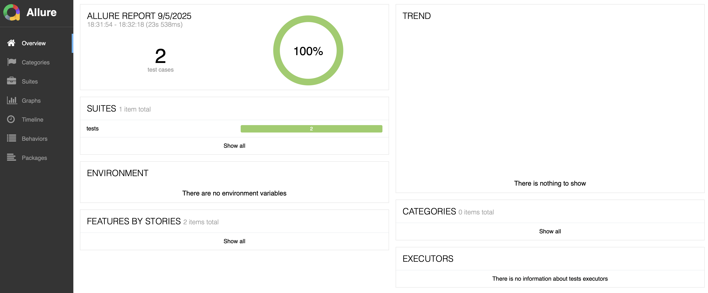

pytest-html for test reports.pytest.ini for HTML reports.@pytest.mark.parametrize.allure-pytest.@allure.step annotations for detailed reports.Reports with `pytest-html`
Installation:
To use this feature, you need to install the `pytest-html` package:#On terminal
pip install pytest-html Usage:
The report is automatically generated as `report.html` in the root directory when you run `pytest`
Let's run the all the tests created so far and check the report.html
# Examples: how to run pytest with --html report parameter
pytest --html=report.html Day1/test_home_page.py
pytest --html=report.html Day2/
pytest --html=report.htmlCheck the rerport.html file created on Project Area:
Update the pytest.ini
Add the parameter into the configuration file to always generate the report in HTML
[pytest]
testpaths = tests
addopts = --html=report.html --self-contained-htmlScreenshots on Failure
The framework is configured to automatically take a screenshot and embed it in the HTML report when a test fails. This is handled by the `pytest_runtest_makereport` hook in the conftest.py file.
We've integrated `pytest-html` and configured our `conftest.py` to automatically generate an HTML report with embedded screenshots for any failed tests.
@pytest.hookimpl(hookwrapper=True)
def pytest_runtest_makereport(item, call):
outcome = yield
report = outcome.get_result()
extra = getattr(report, "extra", [])
if report.when == "call" and report.failed:
# Create screenshots directory if it doesn't exist
if not os.path.exists("screenshots"):
os.makedirs("screenshots")
# Take screenshot
driver = item.funcargs['driver']
screenshot_file = os.path.join("screenshots", f"{item.name}_error.png")
driver.save_screenshot(screenshot_file)
# Add screenshot to the HTML report
if screenshot_file:
html = f'<div><img src="{screenshot_file}" alt="screenshot" style="width:304px;height:228px;" ' \
f'onclick="window.open(this.src)" align="right"/></div>'
extra.append(pytest_html.extras.html(html))
report.extra = extraWe've expanded our test suite to include a new scenario for filling out the "Practice Form" on DemoQA.
Practice Form: This test fills out the Practice Form with data and submits it.
Manual Steps:
Create a new Page Object named pages/practice_form_page.py to encapsulate the interactions with the form elements.
from selenium.webdriver.common.by import By
from selenium.webdriver.support.ui import Select
from selenium.webdriver.common.keys import Keys
class PracticeFormPage:
def __init__(self, driver):
self.driver = driver
self.url = "https://demoqa.com/automation-practice-form"
self.first_name_input = (By.ID, "firstName")
self.last_name_input = (By.ID, "lastName")
self.email_input = (By.ID, "userEmail")
self.gender_radio = (By.XPATH, "//label[text()='{}']")
self.mobile_input = (By.ID, "userNumber")
self.dob_input = (By.ID, "dateOfBirthInput")
self.subjects_input = (By.ID, "subjectsInput")
self.hobbies_checkbox = (By.XPATH, "//label[text()='{}']")
self.picture_upload = (By.ID, "uploadPicture")
self.address_textarea = (By.ID, "currentAddress")
self.state_dropdown = (By.ID, "state")
self.city_dropdown = (By.ID, "city")
self.submit_button = (By.ID, "submit")
self.out_put_modal = (By.ID, "example-modal-sizes-title-lg")
def navigate(self):
self.driver.get(self.url)
def fill_form(self, data):
self.driver.find_element(*self.first_name_input).send_keys(data["first_name"])
self.driver.find_element(*self.last_name_input).send_keys(data["last_name"])
self.driver.find_element(*self.email_input).send_keys(data["email"])
self.driver.find_element(By.XPATH, f"//label[text()='{data['gender']}']").click()
self.driver.find_element(*self.mobile_input).send_keys(data["mobile"])
# Date of Birth
dob_field = self.driver.find_element(*self.dob_input)
dob_field.send_keys(Keys.CONTROL + "a")
dob_field.send_keys(data["dob"])
dob_field.send_keys(Keys.ENTER)
# Subjects
subjects_field = self.driver.find_element(*self.subjects_input)
for subject in data["subjects"]:
subjects_field.send_keys(subject)
subjects_field.send_keys(Keys.ENTER)
# Hobbies
for hobby in data["hobbies"]:
self.driver.find_element(By.XPATH, f"//label[text()='{hobby}']").click()
# Picture
# self.driver.find_element(*self.picture_upload).send_keys(data["picture"])
self.driver.find_element(*self.address_textarea).send_keys(data["address"])
# State and City
self.driver.find_element(*self.state_dropdown).click()
self.driver.find_element(By.XPATH, f"//*[text()='{data['state']}']").click()
self.driver.find_element(*self.city_dropdown).click()
self.driver.find_element(By.XPATH, f"//*[text()='{data['city']}']").click()
def submit_form(self):
self.driver.find_element(*self.submit_button).click()
def check_modal_visible(self):
return self.driver.find_element(*self.out_put_modal).is_displayed()Create the test file to perform the manual steps: tests/test_practice_form.py
import pytest
import json
from pages.practice_form_page import PracticeFormPage
def load_test_data(path):
with open(path, 'r') as f:
return json.load(f)
@pytest.mark.parametrize("data", load_test_data("data/practice_form_data.json"))
def test_fill_practice_form(driver, data):
form_page = PracticeFormPage(driver)
form_page.navigate()
form_page.fill_form(data)
form_page.submit_form()
assert form_page.check_modal_visible()To run the same test flow with different data, we've implemented data-driven testing using `pytest`'s parameterization feature.
data/practice_form_data.json), making it easy to update.
# Create file, data/practice_form_data.json
[
{
"first_name": "John",
"last_name": "Doe",
"email": "john.doe@example.com",
"gender": "Male",
"mobile": "1234567890",
"dob": "15 May 1990",
"subjects": ["Maths", "Physics"],
"hobbies": ["Sports", "Music"],
"picture": "",
"address": "123 Main Street",
"state": "NCR",
"city": "Delhi"
},
{
"first_name": "Jane",
"last_name": "Smith",
"email": "jane.smith@example.com",
"gender": "Female",
"mobile": "0987654321",
"dob": "20 February 1995",
"subjects": ["Chemistry", "Biology"],
"hobbies": ["Reading"],
"picture": "",
"address": "456 Oak Avenue",
"state": "NCR",
"city": "Gurgaon"
}
]In essence, allure-pytest acts as a bridge, allowing Pytest users to leverage the powerful reporting capabilities of Allure Report for comprehensive test analysis and visualization.
Install the `allure-pytest` package and Allure command-line tool:
pip install allure-pytest
brew install allure1. Run `pytest` with the `--alluredir` flag:
# Run all tests create and generate report on Allure
pytest --alluredir=allure-results
# Run a specific test
pytest tests/test_practice_form.py --alluredir=allure-results2. Serve the Allure report:
allure serve allure-results3. Check Allure report:
Allure creates a folder with all restuls. Allure start a server to display the results, press 'control + c' to stop (on terminal)
 Update thepytest.ini
Add the parameter into the configuration file to always generate the report in HTML
[pytest]
testpaths = tests
addopts = --html=report.html --self-contained-html --alluredir=allure-resultsA simple Python script, `dashboard.py`, has been created to parse the Allure JSON results and generate a custom HTML dashboard.
Today, we've significantly enhanced our test automation framework and learned how to debug and solve common, real-world test automation challenges. These improvements will help us write more robust, maintainable, and scalable tests.
Happy Testing!